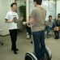

Jun 2003
(C)2003 GNUE(鵺)DATE: 2003/07/01

Jun 28, 2003
[Space] Space Elevator（⇒PC WEB）
2018年、軌道エレベータ運行開始ですか。確か“理論的”には軌道エレベータがもっともローコストで安全に宇宙と地球を往復できる手段だったはずだけど、これが実現できれば宇宙開発は一変しますね。１５年後かぁ。かなり近い未来だけど本当に可能なのか。でも、これが実現すれば自分が生きてるうちに一般人が宇宙に行ける可能性も高くなりそう。

Jun 27, 2003
[Misc] 血を吸う電車
電車が駅と踏切りの途中で止っていた。どうやら人身事故があったようだ。JR の中央線や山手線ではよくあることだけど西武新宿線のうちのあたりでは珍しい。それにしても人身事故があった電車ってどうなるんだろう。安いしろものじゃないし破棄されずにそのまま使い続けられるんでしょうね。もしかしたら私達がいつも乗っている電車も気が付かない（気にしない）だけで誰かの血を吸った電車なのかもしれない。
BGM：“血を吸うカメラ”（鈴木さえ子『科学と神秘』より）
[Food] 珈琲豆
いつも珈琲館で買ってるのだけど今回は西友で購入。それにしてもスーパーだと豆のままのものよりも予めひいてある粉のほうが全然安いんだよね。本当は豆のほうが好きなのだけど安さにつられて粉の方にしちゃいました。昔（１０年ぐらい前）たまプラーザに住んでたときは煎りたての珈琲豆を売ってるお店があったのでよく使ってのだけど今の住んでるところはそういうお店がないので不便。
Jun 23, 2003
Jun 22, 2003
[Misc] 1000000人のキャンドルナイト
今日は夏至。「夏至の夜、みんなでいっせいに２時間だけ電気を消しませんか？」という１００万人のキャンドルナイトという呼びかけがあります。年に１度こういう日があってもいいかもしれませんね。さて、キャンドルを買ってこなければ...
Jun 21, 2003
[Phone] いつまでも古いビジネスモデルにしがみついていると...
asahi.com に「番号ポータビリティー」の記事が載っている（⇒asahi.com）。携帯各社は導入には必ずしも前向きではないそうだ。でも「IM感覚のVoIP電話」（⇒ZDNet）なんてのも開発されているし(*1)、VoIP 携帯電話が登場してきたら必ずしも数字の電話番号なんてものに縛られる必要はない。いつまでも古いビジネスモデルにしがみついているとそのうち新興企業に足をすくわれることになるだろう。
*1) Win も Pocket PC も SPOT もいまいちだけど、IP 電話のこの方向性は正しい進化だ
Jun 20, 2003
[Gadget] Segway の試乗会 6/21, 22
今週末、お台場「東京ジョイポリス」にてセガ主催のセグウェイ試乗会があるようです。
東京エリアのセグウェイ試乗会のお知らせです！ 今回に限らず、夏に向けて各地で 試乗会が計画されていますので、随時ご連絡 申し上げます。 【対象】セグウェイに初めて乗る方 【日時】6月21日（土）22日（日） 2日間 12時～14時 17時～19時 20時～22時 【場所】東京都港区 お台場「東京ジョイポリス」 http://www.sega.co.jp/joypolis/data_tokyo.html 【料金】試乗会は無料（ジョイポリスの入館に入場料500円がかかります） 【条件】先着受付順 各回 定員 20名まで。 当日の朝10時より東京ジョイポリス3Fインフォメーションカウンターに て受付を開始します。 【交通】東京臨海新交通ゆりかもめ 「お台場海浜公園」駅より徒歩2分 東京臨海高速鉄道臨海副都心線 「東京テレポート」駅より徒歩10分 【イベント主催者】株式会社セガ 東京都港区台場1丁目6番1号 TEL:03-5500-1801(代表) ※1stsegway.jpでは、セグウェイの輸入代行をはじめております。 為替レートにより変動いたしますが、今週は、84万7,514円で受付中です！
Jun 19, 2003
[Energie] 首都圏電力不足問題で注意を呼び掛け（⇒ZDNet）
うち iBook だから全然OKね :-P
たびたび書いてるように私はノートブック派なのでこういう心配はしなくていい。よく考えたら、今まで購入したデスクトップって Mac Plus だけじゃないか（笑）
Jun 18, 2003
[Palm] Treo 600
うわぁ、ちっちゃぁ。向こうの人の手のサイズが大きいことを考慮に入れても SO505i よりも小さい気がする。ただこれだけ小さいとキーボードの使いやすさが気になるのだけどどうなんだろう。
[Technology] 虹色の太陽電池
太陽電池というと黒くて四角いセルが繋がった板を想像するが、いまレインボーセルという色付きの太陽電池が注目を集めているらしい。通常の太陽電池にくらべると発電効率は落ちるがフィルム状のものや塗装に応用可能なので応用範囲は広い。
例えば、Bluetooth キーボード・マウス・ハンドセットが乾電池や充電の必要なしに使えたらいいかも。あと、充電の必要ないデジＱなんてのもアリかな。
Jun 17, 2003
[Hero] 555 ファイナルシーンに参加せよ
うーむ、はずれてしまった。残念 :-{
Jun 16, 2003
[Electronics] 鏡の中からテレビが観られる「Mirror TV」（⇒asahi.com）
なかなかよさそうですね。一般家庭向けの販売は予定していなかったらしいのだが、モニターからのリクエストが多くて 2005 年までに一般家庭向けの販売も決定しているそうです。価格が気になるところだけど日本でも販売して欲しいです。
[Misc] 「天の川見て」 石垣島、８月２日全島ライトダウン（⇒asahi.com）
宇宙から見ると夜の日本列島が非常に明るいということは有名な話だ。今年の夏は原発政策の失敗により首都圏の電力不足が心配だということだが、それだったら東京でも１日ぐらいライトダウンして星空を楽しむのもいいんじゃないだろうか。人間的には好きではないけどパフォーマンスのうまい石原都知事さん、どうですか？
[Gadget] Segway 乗りました
 Gallery を見てもう気がついていると思いますが Segway の試乗会に行ってきました。最初は定員になったので申込みが通らなかったのですがキャンセルが出たということで参加できました。
参加者は３０代が中心。やっぱ、この手のガジェットが好きな年齢層なんでしょうねぇ。WRISTOMO を腕にしている人もいました。参加人数は１回に２０名ぐらい（6/13 は７時からと８時からの２回あった）で、１回４５分ぐらいなので１人の人が乗れる時間は賞味３分ぐらいです。結構短い時間ですが他の人の初体験の様子が見れてそれなりに楽しめます。
乗るのは比較的簡単です。変に力まなければまず大丈夫です。体重移動というか、前に引かれるように意識すれば前進し、後ろに押されるように意識すれば後進します慣れないとちょっと感覚がわからないのがカーブです。一見体重移動で方向転換するように見えますが実際は左ハンドルのスロットルで回転します。慣れないと肩に力が入ってしまうのかついつい回し過ぎてしまいます。８の字走行を数人がしたのだけどこれが難しかった。うまい人はうまいんだけど...
あと肩の力を抜く意味で「笑って！」とか言われるのだけどこれが一番難しかしいかもしれない。ひきつってました(^^;（俺←笑うのが苦手なやつ）
Jun 12, 2003
[Web] Gallery from photolog
右サイドの Gallery コーナーを x-lab のサーバに設置した photolog から自動的にひっぱってきて表示するようにしました。ま、単に iframe タグを使っているだけですが。
Jun 11, 2003
[Body] 指の痺れ
今日 お酒を呑んでいて途中から指が痺れだした。こんなことははじめて。まだ痺れてる...
[Electronics] 心に訴える“こだわりのモノづくり”――ソニー「QUALIA」（⇒ZDNet）
どうやら私の心には訴えかけないようだ...
[Social] SARS とＴＶ会議
SARS の影響で出張ではなくＴＶ会議を行う企業が増えたそうだ。それを聞いてアイザック・アジモフ『裸の太陽』のソラリアを思い出してしまった。
Jun 10, 2003
[Gadget] Segway の試乗会 6/13
今週の金曜日 恵比寿において Segway の試乗会があるそうです。
セグウェイ試乗会（東京エリア）のお知らせ
東京エリアで試乗希望の皆様、大変お待たせいたしました！
今週のお知らせで、大変、申し訳ありませんが、下記のスケジュールで
Segway試乗会を行います。
今回に限らず、今後いくつか試乗会で予定されておりますので、またお知らせ
いたします。
【日時】2003年6月13日（金） 19:00開場 19:15開始～21:00終了
【場所】ステップ・サポート
東京都渋谷区恵比寿4-5-21ISビル
（JR線 恵比寿駅 東口徒歩2分）
http://www.step-support.co.jp/top/access.html
【料金】講習会費用＆試乗料金 2,000円
【講師】インストラクター KNN神田敏晶＆Segway Girls
【お申し込み】info@knn.com まで、サブジェクトに
「6/13 Segway試乗会」として、電子メールアドレス、
お名前、会社名を明記してお申し込みください。
定員になり次第締め切らせていただきます。
※また、1stsegway.jpでは、Segwayの輸入代行サービスを開始いたします。
本体価格、諸経費、講習代理、関税、送料、などすべて込みで $6,808 です。
今週の為替レートで846,299円です。
購入希望の方は、info@1stsegway.jp までお問い合わせください。
Jun 9, 2003
[Play] ハグハグ共和国『８ ― いつも いつでも いつまでも―』 6/8 ソワレ
結局ひとりで観に行ってきました。結論から言えばハズレでもなかったけどアタリでもなかった。
ストーリーは“ライン”というコンピュータに支配された未来、人間は人工受精で誕生し頭脳にチップを埋込まれて感情を持たず“ライン”のいうままに行動する。感情を持った人間“ポンコツ”たちは“ライン”の支配から逃れて...
というありがちな話。ありがちなのはストーリーだけではなく演出もそう。自分達の好きな芝居をなぞってやっているという感じがする。そんなにひどくはないけど、新しいものや驚き(Wonder)もない。
Jun 8, 2003
[Hero] もしかしたら仮面ライダーになれるかも？
大きなお友達は当然チェック済みだと思うけど劇場版 仮面ライダー555の１万人エキストラ募集を行っています（⇒仮面ライダー555 からの緊急指令）
もしかしたらそうかなと思っていたのだけど、今日の 555 の劇場版予告で「１万人の仮面ライダー部隊」って言ってましたよね。ってことはこの募集は...
当選しなきゃだめなんだけど、友人が私の分もいっしょに応募しちゃったのでもしかしたら仮面ライダーになれるかも（笑）
Jun 7, 2003
[Idea] 携帯アプリ「心霊くん」
そろそろ夏ということもあってテレビで写真に霊が写ってるという例のやつをやっていた。ただ、その写真ってカメラ付携帯の写真なんだよね。
というわけでついついばかなことを考えてしまう。心霊写真の撮れる携帯アプリがあったらどうだろう。普通に写真を撮っているフリして「あ、○○さんの後ろに霊が写ってる！」なんてやると面白いかも。つのだじろう張りの心霊写真だと電力不足の今年の夏にはちょうどいいかもしれない。
つのだじろうと言えば「恐怖新聞」だけれど、いまだったら携帯メールで恐怖新聞が届いたりするのだろうか(^^;？
Jun 6, 2003
[Phone] カメラ付きH"端末（⇒ZDNet）
AirH" PHONE じゃないけどメール放題に対応しているしなかなかいいかも。ただ11万画素はちょっと少な過ぎ。せめて３２万画素は欲しい。
Jun 5, 2003
[Phone] SO505i のモックアップ
5/4 から SO505i が販売されるというので携帯ショップをちょっとのぞいてきた。実物は見なかったがモックアップがあったのでそれを触る。友人から SO505i はトウフだと聞いていたけど確かに豆腐みたいに分厚く四角い(^^;
SO505i ではなくデジカメにしたのはとりあえず正解だったかな。もっと薄くてシンプルなメガピクセル携帯が登場するまでカメラ付携帯は見送ることにする。
Jun 3, 2003
Jun 2, 2003
[Play] 演劇のチケット１枚あります
ひさしぶりに演劇でも観たいなとチケットプレゼントに応募したらチケット（２枚）が当たっちゃいました。それでチケットが１枚あまっちゃうのですが誰か欲しい人いませんか？
ハグハグ共和国 Vol.7 『８ ― いつも いつでも いつまでも―』
2003.6.4(水)～6.8（日）
下北沢 OFFOFFシアター
⇒ハグハグ共和国
時間がないので郵送するのもあれですしもしよろしければご一緒しましょう。
なお、私も芝居を観るのはほんとひさしぶり(*1)なので最近の劇団はぜんぜんわかりません。この劇団も初見です。ですから面白いかどうかは観てのお楽しみということで....(^^;
*1) １０年ぐらい前は月に数本は観ていたのですが...
[Gadget] あやしいモノを触る会
友人が WISTOMO を購入したというので、それだったらみんなで“あやしいモノ”を持ち合って触る会でもしようかということで 5/31 に仲間内で集まりました。ほんとうは水の入ったコップに WISTOMO を入れた写真を載せたかったのだけど撮り損ねてしまいました(*1)。WISTOMO は日常生活防水（JIS B 7021）なので普通の生活で水に濡れるぐらいは全然 OK です。
WRISTOMO 以外では eMate 300, PSION Revo, CLIE PEG-NZ90, P2102V それに日本では発売されていない HP dj450(*2) やラオスコーヒー＆マルベリーティーが集まりました。
*1) 実は前日にも飲み屋に居合わせた客さんの前で同じパフォーマンスをしていました(^^;
*2) 本当は bluetooth 経由でプリントアウトできるはずなのだけどやり方がわからず失敗。誰か使い方がわかる人がいたら教えて下さい